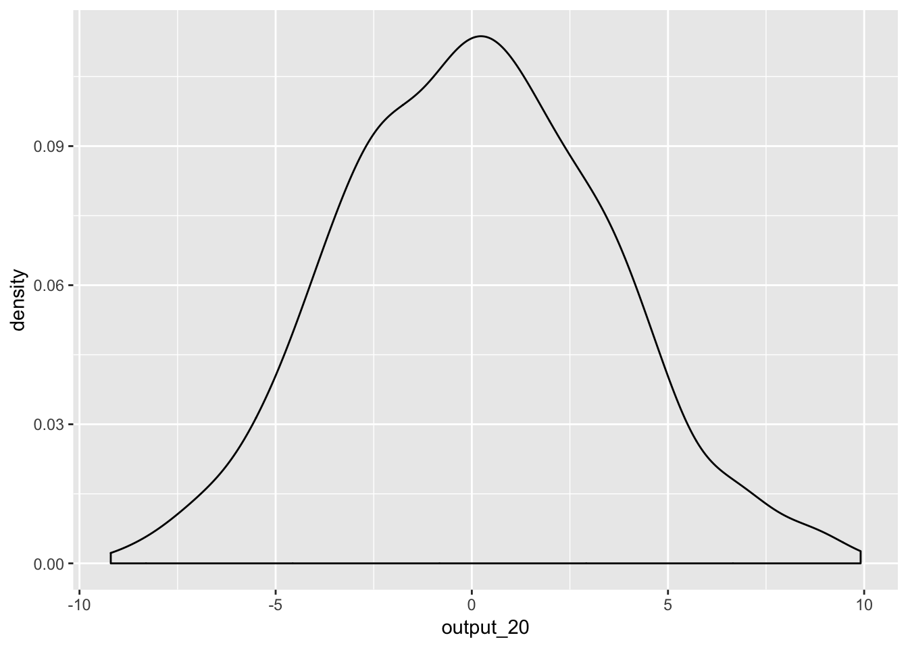
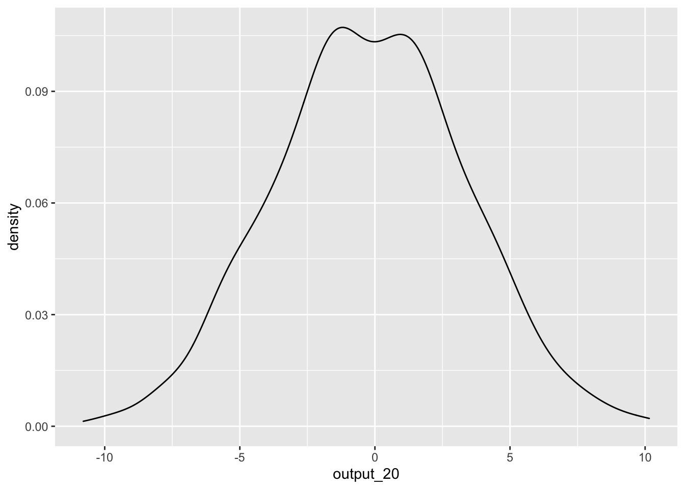
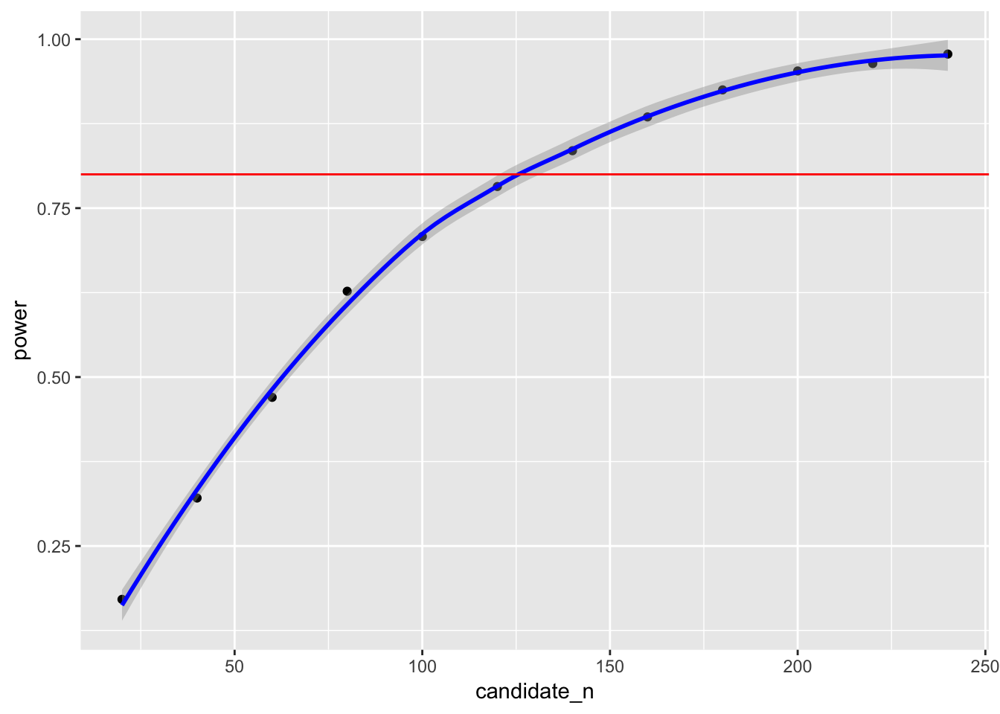

Content
These are the functions we will be using in this workbook:
library(tidyverse)
library(broom)Custom Functions
Throughout our time with R, we have used many functions from different packages. Functions in these packages were written by other R users. While some of these functions do some complex things, every function in R is written the same way.
To create a function, you will use a function called function(), which has a couple of unique properties. Let’s demonstrate how function() works via an example. Here is a simple function called add_numbers that adds two numbers together.
add_numbers <- function(number1,number2){
result <- number1 + number2
return(result)
}And here is our new custom function in action:
add_numbers(number1 = 3, number2 = 4)## [1] 7Let’s break these down. The function() function is the function that creates a function. This can be saved as an object (in the example above, the object name is add_numbers). Any arguments you want in your custom functions are named as arguments within the brackets (in the above case, the arguments are number1 and number2). function() must always be followed by a set of curly brackets {} which can span multiple lines. Whatever occurs within these curly brackets is performed whenever you call the function. At the end of each function is a return() call, which is what you want your function to return at it’s completion. Each function can only return one object. If your function does not have this command, your function may not do anything.
Importantly, whatever happens inside the function happens in it’s own environment, that is, any objects created inside a function does not get saved in the workspace. So in the example above, we cannot call upon the object result that we made in the function above. If you try, it will produce an error.
Creating custom functions are helpful if you are planning to do the same computation multiple times on different objects. Instead of typing out the code each time, you can write it once in a function, and use that function to perform the operation.
Standardising Variables
Something that we have to perform often is standardising variables (or a vector of numbers). Rather than computing the mean and standard deviation separately everytime we want to do this, we can create a custom function that does the whole process for us.
Here is what the code would look like if we were to standardise a vector manually:
#This is the vector we wish to standardise.
vector
vector.mean <- mean(vector,na.rm = TRUE)
vector.sd <- sd(vector,na.rm = TRUE)
z.vector <- (vector - vector.mean)/vector.sdHowever, we can put this code within the curly brackets of a custom function, and create a new function called z. Remember to use the return() call to tell R that you want the standardised vector to be the output of your new function:
z <- function(vector){
vector
vector.mean <- mean(vector,na.rm = TRUE)
vector.sd <- sd(vector,na.rm = TRUE)
z.vector <- (vector - vector.mean)/vector.sd
return(z.vector)
}We can now use this function to standardise any vector of numbers we come across! This is particularly helpful to use within a mutate() function while preparing the data for analysis.
Simulating a data.frame via a Function
Now that we’ve gotten the taste for creating custom functions, let’s create another one that simulates data in a data.frame. We are going to recreate the data.frame from Workbook 5 where we tested the hypothesis that cat-people are more introverted than dog-people. Before we can do that though, we must introduce some new functions:
sample()
This function randomly samples options from a vector. For instance, below we randomly sample 40 objects who are either in the ‘cat’ group or the ‘dog’ group. To see more about how this function works, read help(sample).
sample(c("cat","dog"),40,replace = TRUE)## [1] "dog" "cat" "cat" "dog" "cat" "dog" "dog" "cat" "cat" "cat" "dog"
## [12] "dog" "cat" "dog" "dog" "dog" "dog" "cat" "dog" "cat" "cat" "dog"
## [23] "cat" "dog" "dog" "dog" "dog" "cat" "dog" "cat" "cat" "dog" "cat"
## [34] "cat" "cat" "cat" "dog" "cat" "cat" "cat"rnorm()
This function creates a random continuous variable that is normally distributed. In the example below, we create a random normal distribution with a mean of 0 and a standard deviation of 1. To see more about how this function works, read help(rnorm).
rnorm(40,mean = 0,sd = 1)## [1] 0.925922970 0.800012097 -2.106170551 -0.124191644 0.866156356
## [6] 0.965083146 -0.806967568 -1.105275091 -0.130812914 -1.667304027
## [11] 2.099524222 1.124154557 0.255737336 -1.989511493 -0.570629321
## [16] -2.266888770 1.108130080 0.046372796 0.217378015 0.242768436
## [21] -0.534419178 0.016079400 1.759816101 0.006369869 -1.385132704
## [26] 1.083247433 0.137188277 -1.268768796 1.548538292 -1.791869534
## [31] 0.684711883 0.060870467 -0.770574868 -1.103914827 1.054689455
## [36] 0.579743295 -1.818255320 -2.245511122 1.352286747 0.844875552We now have the tools to create our simulate data function, which we will save as create_dataset. It will take one argument, n, which specifies the number of participants in the data.frame.
We will set the mean and sd of the variable ‘introvert’ to match what we found in Workbook 4. (M = 36.33, SD = 7.31)
create_dataset <- function(n){
result <- data.frame(group = sample(c("cat","dog"),n,replace = TRUE),
introvert = rnorm(n,mean = m.introvert,sd = sd.introvert))
return(result)
}Let’s test it out:
create_dataset(20)## group introvert
## 1 dog 48.77452
## 2 cat 23.96665
## 3 dog 35.24718
## 4 dog 42.33044
## 5 cat 32.72211
## 6 dog 42.06500
## 7 dog 35.26232
## 8 cat 43.13130
## 9 dog 36.40364
## 10 dog 43.45730
## 11 dog 30.29279
## 12 dog 41.11706
## 13 dog 35.87044
## 14 dog 39.44652
## 15 dog 19.38907
## 16 dog 28.60047
## 17 dog 47.22952
## 18 dog 53.28043
## 19 dog 41.72204
## 20 cat 46.34800Conduct a statistical test with simulated data.
Let’s expand the function above. How about creating a function that simulates a dataset, then runs a t-test, and returns the results of the test? We can do this by including the function that runs a t.test within the function we wrote above:
simulate_test <- function(n){
result <- data.frame(group = sample(c("cat","dog"),n,replace = TRUE),
introvert = rnorm(n,mean = m.introvert,sd = sd.introvert))
test <- t.test(introvert ~ group, data = result) %>%
tidy()
return(test$estimate)
}simulate_test(20)## [1] 1.033881Let’s go another step further and say we want to run a t-tests on simulated data 1000 times. Doing so will give us a distribution of estimates given a certain statistical test and sample size. We can do this by using the replicate() function.
output_20 <- replicate(1000,simulate_test(20))To see the distribution of estimates, we can plot these values:
ggplot() +
geom_density(aes(output_20))
But hang on! We know there is no effect as the two variables in the t-test are completely random. So how come we are getting such a wide-range of p-values? This demonstrates one of the core issues with statistical tests. A sample is only a proportion of the entire population, and your estimate can vary greatly depending on the slice of the population that happens to make it into your sample.
What if we increase the number of participants in our simulated dataset to 200 participants?
output_200 <- replicate(1000,simulate_test(200))
ggplot() +
geom_density(aes(output_200))
We see that, while we still get a range of estimates, they are much less extreme. This is because with a larger sample size, the ‘slice’ that is our sample is more likely to be representative of our population, and therefore is more likely to be around the correct value. Using this knowledge, we can construct a power analysis to determine the minimum number of participants needed to accurately detect an effect.
Power analysis using simulations
Above, we replicated a data.frame where we do not expect to find a significant effect (because the variables are completely random and unrelated from each other). However, what if we expect an association? Using the same technique, we can run a power analysis to determine whether a certain experimental design/analysis has the ability to detect an effect given a sample size.
Remember, power is the ability to detect an effect if it is there. Generally, things that influence power are effect size, alpha level (significance level), and number of observations.
In the code below, we again create a function, but include an additional argument for effect size (in the form of a mean difference between the ‘cat’ and ‘dog’ groups). Also, instead of returning the estimate, we will return the p-value.
simulate_test2 <- function(n,mean.diff){
result <- data.frame(group = sample(c("cat","dog"),n,replace = TRUE),
introvert = rnorm(n,mean = m.introvert,sd = sd.introvert)) %>%
mutate_(mean.diff = mean.diff) %>%
mutate(introvert = ifelse(group == "cat",introvert - mean.diff/2,introvert + mean.diff/2))
test <- t.test(introvert~ group, data = result) %>%
tidy()
return(test$p.value)
}Then, we can calculate the proportion of times we find a significant effect when alpha = .05. For fun, let’s use the actual mean difference we found between cat-people and dog-people.
data <- read.csv("files/data_2019.csv",stringsAsFactors = FALSE) %>%
mutate(introvert = 12 - (introversion1 + introversion4) + introversion2 + introversion5 + introversion7 + introversion8 + introversion10 + introversion11 + introversion13 + introversion14 + introversion16 + introversion18) %>%
mutate(introvert = introvert * -1)
data %>%
group_by(cat.dog) %>%
summarise(introvert.mean = mean(introvert,na.rm = TRUE))## # A tibble: 5 x 2
## cat.dog introvert.mean
## <chr> <dbl>
## 1 "" NaN
## 2 both -35.9
## 3 cat -33.6
## 4 dog -38.2
## 5 neither -34.3cat.dog_difference <- -37.67442 - -33.95000sim.results <- replicate(1000,simulate_test2(20,cat.dog_difference))
power <- mean(sim.results < .05)
power## [1] 0.167The convention is that the analysis is sufficiently powered if it can detect an effect that is present 80% of the time. The power calculated for a sample size of 20 was 16.7%, which falls quite short of this threshold. What if we increased our sample size?
sim.results <- replicate(1000,simulate_test2(240,cat.dog_difference))
power <- mean(sim.results < .05)
power## [1] 0.978Now with a sample size of 240, we appear to have enough power. By running the above simulations at different sample sizes, we will be able to determine the sample sizes needed to acheive 80% power. Below is code to automatically run the simulate_test2() function at different sample sizes and save the results in a data.frame. There are some complicated things going on here, but see if you can make sense of it. You may need to look up what certain functions do.
power.grid <- data.frame(candidate_n = rep(seq(20,240,by = 20),each = 1000)) %>%
mutate(power = vapply(candidate_n,simulate_test2,FUN.VALUE = 1,mean.diff = cat.dog_difference)) %>%
group_by(candidate_n) %>%
summarise(power = mean(power < .05))
power.grid## # A tibble: 12 x 2
## candidate_n power
## <dbl> <dbl>
## 1 20 0.169
## 2 40 0.353
## 3 60 0.489
## 4 80 0.616
## 5 100 0.707
## 6 120 0.781
## 7 140 0.846
## 8 160 0.903
## 9 180 0.918
## 10 200 0.928
## 11 220 0.956
## 12 240 0.98This suggests that to detect a mean difference of 3-points on introversion between cat-people and dog-people with our data 80% of the time, we would require between 120 and 140 participants to be confident in our result. We can also plot the simulated power analyses to help determine the sample size required.
ggplot(data = power.grid,aes(x = candidate_n,y = power)) +
geom_point() +
geom_smooth(colour = "blue") +
geom_hline(yintercept = .80,colour = "red")
pwr Package
While the method above is handy for demonstrating some of the capabilities of R, and can be used to do a power analysis for quite complicated analyses, for simple analyses such as an independent-samples t.test, it may be a bit over-kill. A much simpler way to calculate power for standard inferential tests is to use functions in the pwr package. Compare the power estimate above with the one using the pwr.t.test() function below.
library(pwr)
#First we must calculate effect size (Cohen's D)
D <- cat.dog_difference/sqrt((sd.introvert^2 + sd.introvert^2)/2)
D## [1] -0.5093678#We then put this effect size into the pwr.t.test() function.
pwr.t.test(d = D,power = .8,sig.level = .05,type = "two.sample")##
## Two-sample t test power calculation
##
## n = 61.47781
## d = 0.5093678
## sig.level = 0.05
## power = 0.8
## alternative = two.sided
##
## NOTE: n is number in *each* group